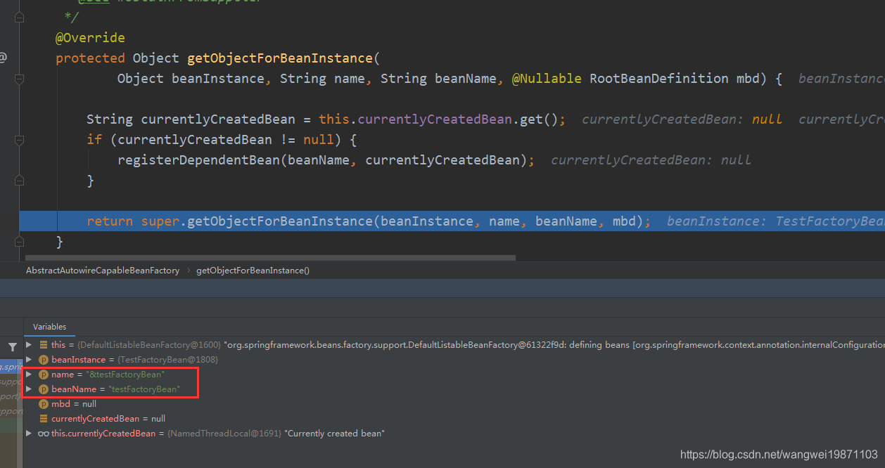
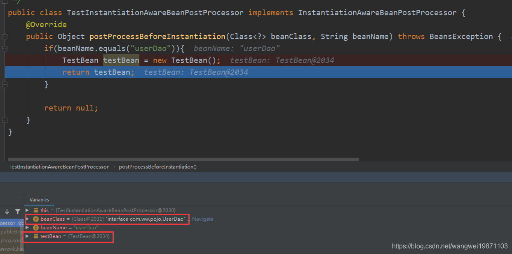

getBean(String name)，是对Bean进行实例化以及属性注入的重要步骤，废话不多直接开整。
里边调用的是doGetBean方法。
1// AbstractBeanFactory2public Object getBean(String name) throws BeansException {4 return doGetBean(name, null, null, false);5}参数说明：
name：就是bean名字。
requiredType：表示需要的类型，如果有类型，创建后会进行类型转换。
args：表示参数，也就是构造方法的参数。
typeCheckOnly：表示只是做检查，并不是真的要用，这个会影响一些逻辑。
x1protected <T> T doGetBean(final String name, final Class<T> requiredType,2 final Object[] args, boolean typeCheckOnly) throws BeansException {3
4 // 获取规范名字5 final String beanName = transformedBeanName(name);6 Object bean;7
8 // 检查是否手动注册了单例9 // Eagerly check singleton cache for manually registered singletons.10 Object sharedInstance = getSingleton(beanName);11 12 //存在单例了13 if (sharedInstance != null && args == null) {14 if (logger.isTraceEnabled()) {15 if (isSingletonCurrentlyInCreation(beanName)) {16 logger.trace("Returning eagerly cached instance of singleton bean '" + beanName +17 "' that is not fully initialized yet - a consequence of a circular reference");18 }19 else {20 logger.trace("Returning cached instance of singleton bean '" + beanName + "'");21 }22 }23 24 // ---看第二步---25 // 从实例池中获取到bean26 bean = getObjectForBeanInstance(sharedInstance, name, beanName, null);27 // ---end---28 }29
30 else {31 32 // ---看第三步---33 // Fail if we're already creating this bean instance:34 // We're assumably within a circular reference.35 if (isPrototypeCurrentlyInCreation(beanName)) {36 throw new BeanCurrentlyInCreationException(beanName);37 }38 // ---end---39 40 // Check if bean definition exists in this factory.41 BeanFactory parentBeanFactory = getParentBeanFactory();42 if (parentBeanFactory != null && !containsBeanDefinition(beanName)) {43 // Not found -> check parent.44 String nameToLookup = originalBeanName(name);45 if (parentBeanFactory instanceof AbstractBeanFactory) {46 return ((AbstractBeanFactory) parentBeanFactory).doGetBean(47 nameToLookup, requiredType, args, typeCheckOnly);48 }49 else if (args != null) {50 // Delegation to parent with explicit args.51 return (T) parentBeanFactory.getBean(nameToLookup, args);52 }53 else if (requiredType != null) {54 // No args -> delegate to standard getBean method.55 return parentBeanFactory.getBean(nameToLookup, requiredType);56 }57 else {58 return (T) parentBeanFactory.getBean(nameToLookup);59 }60 }61
62 // ---看第四步---63 if (!typeCheckOnly) {64 markBeanAsCreated(beanName);65 }66
67 try {68 final RootBeanDefinition mbd = getMergedLocalBeanDefinition(beanName);69 checkMergedBeanDefinition(mbd, beanName, args);70
71 // Guarantee initialization of beans that the current bean depends on.72 String[] dependsOn = mbd.getDependsOn();73 if (dependsOn != null) {74 for (String dep : dependsOn) {75 if (isDependent(beanName, dep)) {76 throw new BeanCreationException(mbd.getResourceDescription(), beanName,77 "Circular depends-on relationship between '" + beanName + "' and '" + dep + "'");78 }79 registerDependentBean(dep, beanName);80 try {81 getBean(dep);82 }83 catch (NoSuchBeanDefinitionException ex) {84 throw new BeanCreationException(mbd.getResourceDescription(), beanName,85 "'" + beanName + "' depends on missing bean '" + dep + "'", ex);86 }87 }88 }89 // ---end---90
91 // ---看第五步（重点）---92 // Create bean instance.93 if (mbd.isSingleton()) {94 sharedInstance = getSingleton(beanName, () -> {95 try {96 return createBean(beanName, mbd, args);97 }98 catch (BeansException ex) {99 // Explicitly remove instance from singleton cache: It might have been put there100 // eagerly by the creation process, to allow for circular reference resolution.101 // Also remove any beans that received a temporary reference to the bean.102 destroySingleton(beanName);103 throw ex;104 }105 });106 bean = getObjectForBeanInstance(sharedInstance, name, beanName, mbd);107 }108 // ---end---109
110 else if (mbd.isPrototype()) {111 // It's a prototype -> create a new instance.112 Object prototypeInstance = null;113 try {114 beforePrototypeCreation(beanName);115 prototypeInstance = createBean(beanName, mbd, args);116 }117 finally {118 afterPrototypeCreation(beanName);119 }120 bean = getObjectForBeanInstance(prototypeInstance, name, beanName, mbd);121 }122
123 else {124 String scopeName = mbd.getScope();125 final Scope scope = this.scopes.get(scopeName);126 if (scope == null) {127 throw new IllegalStateException("No Scope registered for scope name '" + scopeName + "'");128 }129 try {130 Object scopedInstance = scope.get(beanName, () -> {131 beforePrototypeCreation(beanName);132 try {133 return createBean(beanName, mbd, args);134 }135 finally {136 afterPrototypeCreation(beanName);137 }138 });139 bean = getObjectForBeanInstance(scopedInstance, name, beanName, mbd);140 }141 catch (IllegalStateException ex) {142 throw new BeanCreationException(beanName,143 "Scope '" + scopeName + "' is not active for the current thread; consider " +144 "defining a scoped proxy for this bean if you intend to refer to it from a singleton",145 ex);146 }147 }148 }149 catch (BeansException ex) {150 cleanupAfterBeanCreationFailure(beanName);151 throw ex;152 }153 }154
155 // Check if required type matches the type of the actual bean instance.156 if (requiredType != null && !requiredType.isInstance(bean)) {157 try {158 T convertedBean = getTypeConverter().convertIfNecessary(bean, requiredType);159 if (convertedBean == null) {160 throw new BeanNotOfRequiredTypeException(name, requiredType, bean.getClass());161 }162 return convertedBean;163 }164 catch (TypeMismatchException ex) {165 if (logger.isTraceEnabled()) {166 logger.trace("Failed to convert bean '" + name + "' to required type '" +167 ClassUtils.getQualifiedName(requiredType) + "'", ex);168 }169 throw new BeanNotOfRequiredTypeException(name, requiredType, bean.getClass());170 }171 }172 return (T) bean;173} 这个方法有两个重要的参数name和beanName，name是指传进来的名字，可能是FactoryBean本身的名字，有&前缀，也可能是一般的bean名字，beanName是规范后的名字，去掉了&前缀，所以要进行处理。比如这种：

151protected Object getObjectForBeanInstance(3 Object beanInstance, String name, String beanName, RootBeanDefinition mbd) {4 //如果有正在创建的bean要建立以来关系5 String currentlyCreatedBean = this.currentlyCreatedBean.get();6 if (currentlyCreatedBean != null) {7 registerDependentBean(beanName, currentlyCreatedBean);8 }9
10 11 // ---看2-1步---12 // 掉用父类AbstractBeanFactory的方法13 return super.getObjectForBeanInstance(beanInstance, name, beanName, mbd);14 // ---end---15} 调用父类的处理方法，会先判断name是不是FactoryBean自身的名字。
如果是，就判断beanInstance 是不是FactoryBean类型的，是的话就直接返回，也就是说，要找的就是FactoryBean自身，而不是他创建的bean。
如果不是FactoryBean自身的名字，类型也不是FactoryBean，那就普通的单例，直接返回。否则就是说明应该获取的是FactoryBean创建的bean。
如果RootBeanDefinition 不为空的话，设置FactoryBean=true，否则就从FactoryBean的缓存中获取，如果获取到就直接返回，否则就要创建，然后返回。
521protected Object getObjectForBeanInstance(2 Object beanInstance, String name, String beanName, RootBeanDefinition mbd) {3
4 //是否是FactoryBean名字的前缀5 if (BeanFactoryUtils.isFactoryDereference(name)) {6 if (beanInstance instanceof NullBean) {7 return beanInstance;8 }9 10 //不是FactoryBean的话名字有&会报异常11 if (!(beanInstance instanceof FactoryBean)) {12 throw new BeanIsNotAFactoryException(beanName, beanInstance.getClass());13 }14 if (mbd != null) {15 mbd.isFactoryBean = true;16 }17 return beanInstance;18 }19
20 //不是FactoryBean就直接返回21 if (!(beanInstance instanceof FactoryBean)) {22 return beanInstance;23 }24 25 //创建FactoryBean中的bean26 Object object = null;27 if (mbd != null) {28 mbd.isFactoryBean = true;29 }30 31 // ---看2-1.1步---32 //从FactoryBean的缓存中获取33 else {34 object = getCachedObjectForFactoryBean(beanName);35 }36 // ---end---37 38 // 不存在的话39 if (object == null) {40 FactoryBean<?> factory = (FactoryBean<?>) beanInstance;41 //mbd没定义，但是FactoryBean是有定义的，获取mbd42 if (mbd == null && containsBeanDefinition(beanName)) {43 mbd = getMergedLocalBeanDefinition(beanName);44 }45 boolean synthetic = (mbd != null && mbd.isSynthetic());46 47 // ---看2-1.2步---48 object = getObjectFromFactoryBean(factory, beanName, !synthetic);49 // ---end---50 }51 return object;52} factoryBeanObjectCache就是FactoryBean创建的bean的缓存，创建一次后会进行缓存，下次直接拿。
41protected Object getCachedObjectForFactoryBean(String beanName) {3 return this.factoryBeanObjectCache.get(beanName);4} 这里就是FactoryBean创建bean的过程。
如果FactoryBean是单例，且已经创建出来了，先从缓存里获取看看，如果存在直接返回。如果不存在就进行doGetObjectFromFactoryBean创建，其实就是调用了getObject()获取对象。
这里又做了一次从缓存中获取，感觉挺奇怪的，前面已经获取不存在了，这里怎么又能存在，其实是因为getObject()创建的时候可以自定义，可能有处理器处理，可能会对factoryBeanObjectCache进行设置，所以这里还要判断一次，如果存在的话，就应该获取存在的，而不是刚创建的，这样的话处理器才算是有扩展的功能，否则处理了也等于没用。
如果缓存中不存在，判断是否是否需要处理，其实这里说的就是不是合成的对象!synthetic，比如AOP的advice通知就算是合成的，一般的对象都不合成的，如果需要处理，但是是正在创建中的单例，直接返回不处理，否则要进行处理器处理，最后放进缓存。如果是原型的话每次都创建一个新的。
761protected Object getObjectFromFactoryBean(FactoryBean<?> factory, String beanName, boolean shouldPostProcess) {2 // 是单例并且已经存在3 if (factory.isSingleton() && containsSingleton(beanName)) {4 synchronized (getSingletonMutex()) {5 // 先从缓存中获取6 Object object = this.factoryBeanObjectCache.get(beanName);7 8 // 缓存不存在9 if (object == null) {10 11 // ---看2-1.3步---12 // 继续执行创建Bean13 object = doGetObjectFromFactoryBean(factory, beanName);14 // ---end---15 16 // 再一次从缓存获取（用户可能自定义处理器来获取）17 Object alreadyThere = this.factoryBeanObjectCache.get(beanName);18 // 存在赋值19 if (alreadyThere != null) {20 object = alreadyThere;21 22 // 不存在 23 } else {24 25 //判断是否需要处理26 if (shouldPostProcess) {27 //直接返回28 if (isSingletonCurrentlyInCreation(beanName)) {29 return object;30 }31
32 // ---看2-1.4步---33 beforeSingletonCreation(beanName);34 // ---end---35 36 try {37 38 // ---看2-1.5步---39 //进行后置处理器处理40 object = postProcessObjectFromFactoryBean(object, beanName);41 // ---end---42 }43 catch (Throwable ex) {44 throw new BeanCreationException(beanName,45 "Post-processing of FactoryBean's singleton object failed", ex);46 }47 finally {48 // ---看2-1.4步---49 afterSingletonCreation(beanName);50 // ---end---51 }52 }53 //如果包含了FactoryBean，就将创建的对象缓存54 if (containsSingleton(beanName)) {55 this.factoryBeanObjectCache.put(beanName, object);56 }57 }58 }59 return object;60 }61 }62 63 //FactoryBean是原型的话 每次都创建一个新的Bean64 else {65 Object object = doGetObjectFromFactoryBean(factory, beanName);66 if (shouldPostProcess) {67 try {68 object = postProcessObjectFromFactoryBean(object, beanName);69 }70 catch (Throwable ex) {71 throw new BeanCreationException(beanName, "Post-processing of FactoryBean's object failed", ex);72 }73 }74 return object;75 }76} 其实没别的东西，就是调用getObject()创建对象，如果返回null的话，就封装成一个NullBean。
191private Object doGetObjectFromFactoryBean(final FactoryBean<?> factory, final String beanName)2 throws BeanCreationException {3
4 Object object;5 ...6 //调用自定义的FactoryBean的getObject获取对象7 object = factory.getObject();8 ...9 10 if (object == null) {11 //如果是正在创建的FactoryBean，还没能获得bean，就报异常12 if (isSingletonCurrentlyInCreation(beanName)) {13 throw new BeanCurrentlyInCreationException(14 beanName, "FactoryBean which is currently in creation returned null from getObject");15 }16 object = new NullBean();17 }18 return object;19} 这个就是标记下，正在创建这个bean，创建处理完了就清除标记。
121 protected void beforeSingletonCreation(String beanName) {2 if (!this.inCreationCheckExclusions.contains(beanName) && !this.singletonsCurrentlyInCreation.add(beanName)) {3 //没有在排除范围里内且添加不成功，可能就是循环引用了4 throw new BeanCurrentlyInCreationException(beanName);5 }6 }7
8 protected void afterSingletonCreation(String beanName) {9 if (!this.inCreationCheckExclusions.contains(beanName) && !this.singletonsCurrentlyInCreation.remove(beanName)) {10 throw new IllegalStateException("Singleton '" + beanName + "' isn't currently in creation");11 }12} 对创建出来的bean进行处理器处理，就是进行BeanPostProcessor的postProcessAfterInitialization处理，也就是可以扩展的地方。
191protected Object postProcessObjectFromFactoryBean(Object object, String beanName) {3 return applyBeanPostProcessorsAfterInitialization(object, beanName);4}5
6public Object applyBeanPostProcessorsAfterInitialization(Object existingBean, String beanName)8 throws BeansException {9
10 Object result = existingBean;11 for (BeanPostProcessor processor : getBeanPostProcessors()) {12 Object current = processor.postProcessAfterInitialization(result, beanName);13 if (current == null) {14 return result;15 }16 result = current;17 }18 return result;19}为什么原型不能循环引用呢？
因为原型的定义就是每次都是需要新的对象，如果A是原型，引用B，这个时候B也是要被创建的，如果B是原型，也引用A，那A也要被重新创建，然后A里面又要引用B，又重新创建，这样下去就变成创建的死循环了，所以原型循环引用不行。如果发现父工厂存在，bean定义不存在，就会从父工厂去找，让父工厂去创建，这个情况比较少，所以暂时不深入了。
31if (isPrototypeCurrentlyInCreation(beanName)) {//原型的循环引用报错2 throw new BeanCurrentlyInCreationException(beanName);3} 首先判断是否仅仅是检查类型，不是的话才会标记成已经创建了，或者正要创建，并且会设置需要bean定义合并标记，以便后面获得最新的bean定义。然后会处理dependsOn 依赖，有依赖的会优先处理依赖，这个后面讲。
331//标记已经创建2if (!typeCheckOnly) {3 // ---看4-1步---4 markBeanAsCreated(beanName);5 // ---end---6}7
8try {9 //获取合并后的bean定义10 final RootBeanDefinition mbd = getMergedLocalBeanDefinition(beanName);11 checkMergedBeanDefinition(mbd, beanName, args);12 13 //保证dependsOn的先实例化14 // Guarantee initialization of beans that the current bean depends on.15 String[] dependsOn = mbd.getDependsOn();16 if (dependsOn != null) {17 for (String dep : dependsOn) {18 19 //循环依赖，到底谁先创建呢？20 if (isDependent(beanName, dep)) {21 throw new BeanCreationException(mbd.getResourceDescription(), beanName,22 "Circular depends-on relationship between '" + beanName + "' and '" + dep + "'");23 }24 registerDependentBean(dep, beanName);25 try {26 getBean(dep);27 }28 catch (NoSuchBeanDefinitionException ex) {29 throw new BeanCreationException(mbd.getResourceDescription(), beanName,30 "'" + beanName + "' depends on missing bean '" + dep + "'", ex);31 }32 }33 } 其实就是放进一个alreadyCreated集合里做标记，但是这里会设置需要合并bean定义，这个在前面讲过，因为在创建之后可能会有很多处理器处理过bean定义，所以这里要把bean定义做一个合并，也就是刷新。
191protected void markBeanAsCreated(String beanName) {2 if (!this.alreadyCreated.contains(beanName)) {3 synchronized (this.mergedBeanDefinitions) {4 //需要重新获取合并一下bean定义，以免元数据被同时修改5 if (!this.alreadyCreated.contains(beanName)) {6 clearMergedBeanDefinition(beanName);7 this.alreadyCreated.add(beanName);8 }9 }10 }11}12
13protected void clearMergedBeanDefinition(String beanName) {14 RootBeanDefinition bd = this.mergedBeanDefinitions.get(beanName);15 if (bd != null) {16 //需要合并17 bd.stale = true;18 }19} 我们还是来一般正常的创建吧，如果判断你是到了类型，就开始创建单例，这里传了一个lambda表达式来创建bean。
181//如果是单例，准备创建单例2if (mbd.isSingleton()) {3 // ---看5-1步---4 sharedInstance = getSingleton(beanName, () -> {5 // ---end---6 try {7 8 // ---看5-2步（重点）---9 return createBean(beanName, mbd, args);10 // ---end---s11 }12 catch (BeansException ex) {13 destroySingleton(beanName);14 throw ex;15 }16 });17 bean = getObjectForBeanInstance(sharedInstance, name, beanName, mbd);18 } getSingleton(String beanName, ObjectFactory<?> singletonFactory)，这个获取单例跟以前的不一样，需要创一个ObjectFactory方法，也就是说，可能需要调用这个方法来获取。首先还是先获取下如果存在就返回了，否则就开始创建单例，先做开始创建的标记，然后创建对象，然后清除标记，最后加入到单例集合中。
401public Object getSingleton(String beanName, ObjectFactory<?> singletonFactory) {2 synchronized (this.singletonObjects) {3 //获取4 Object singletonObject = this.singletonObjects.get(beanName);5 if (singletonObject == null) {6 //单例是否在销毁中，报异常7 if (this.singletonsCurrentlyInDestruction) {8 throw new BeanCreationNotAllowedException...9 }10 //创建前做个正在创建的标记11 beforeSingletonCreation(beanName);12 //是否创建单例成功，感觉这个用处不大13 boolean newSingleton = false;14 ...15 16 //调用ObjectFactory的getObject创建bean对象 17 try {18 singletonObject = singletonFactory.getObject();19 //只要获取了就是新单例20 newSingleton = true;21 }22 catch (IllegalStateException ex) {23 ...24 }25 catch (BeanCreationException ex) {26 ...27 }28 finally {29 ...30 afterSingletonCreation(beanName);31 }32 33 //如果是新的单例，就加入到单例集合34 if (newSingleton) {35 addSingleton(beanName, singletonObject);36 }37 }38 return singletonObject;39 }40} 调用ObjectFactory的getObject创建bean对象，其实里面就是这个方法，首先要进行创建类型的解析，解析过程比较复杂，后面讲，因为我们只有名字，不知道要创建什么类型，然后进行方法覆盖，主要是处理look-up方法，CGLIB动态代理实现一些look-up方法，需要检查能不能覆盖，再创建之后进行处理器处理，这个也是扩展点，然后创建。
541protected Object createBean(String beanName, RootBeanDefinition mbd, Object[] args)3 throws BeanCreationException {4
5 ...6 RootBeanDefinition mbdToUse = mbd; 7 //解析出bean的类型8 Class<?> resolvedClass = resolveBeanClass(mbd, beanName);9 //能解析出来，没有BeanClass只有BeanClassName10 if (resolvedClass != null && !mbd.hasBeanClass() && mbd.getBeanClassName() != null) {11 //重新创建RootBeanDefinition12 mbdToUse = new RootBeanDefinition(mbd);13 //设置解析的类型14 mbdToUse.setBeanClass(resolvedClass);15 }16
17 //准备方法覆盖，处理look-up方法18 try {19 mbdToUse.prepareMethodOverrides();20 }21 catch (BeanDefinitionValidationException ex) {22 ...23 }24
25 try {26 // ---看5-2.1步---27 //后置处理器在实例化之前处理，如果返回不为null，直接就返回了28 Object bean = resolveBeforeInstantiation(beanName, mbdToUse);29 // ---end---30 31 if (bean != null) {32 return bean;33 }34 }35 catch (Throwable ex) {36 ...37 }38
39 try {40 41 // --- 非常重要看《详解3》文章---42 //真正创建43 Object beanInstance = doCreateBean(beanName, mbdToUse, args);44 // ---end---45 ...46 return beanInstance;47 }48 catch (BeanCreationException | ImplicitlyAppearedSingletonException ex) {49 ... 50 }51 catch (Throwable ex) {52 ...53 }54} 实例化前处理，如果有处理器返回不为null的话，就直接进行初始化了，最后会设置是否被解析了。如果被处理器处理了，比如动态代理后返回，就直接返回对象了。
301protected Object resolveBeforeInstantiation(String beanName, RootBeanDefinition mbd) {3 Object bean = null;4 if (!Boolean.FALSE.equals(mbd.beforeInstantiationResolved)) {5 6 //非合成的，且有InstantiationAwareBeanPostProcessors7 // Make sure bean class is actually resolved at this point.8 if (!mbd.isSynthetic() && hasInstantiationAwareBeanPostProcessors()) {9 10 //获取类型11 Class<?> targetType = determineTargetType(beanName, mbd);12 if (targetType != null) {13 14 // ---看5-2.2步---15 bean = applyBeanPostProcessorsBeforeInstantiation(targetType, beanName);16 // ---end---17 18 if (bean != null) {19 // ---看5-2.3步---20 bean = applyBeanPostProcessorsAfterInitialization(bean, beanName);21 // ---end---s22 }23 }24 }25 26 //是否解析了27 mbd.beforeInstantiationResolved = (bean != null);28 }29 return bean;30} 实例化前处理器处理，InstantiationAwareBeanPostProcessor类型的处理器处理，返回的是一个Object对象， 也就是说这里可以做一些代理的事，如果发现有一个处理器返回的不是null，就直接返回了。
131protected Object applyBeanPostProcessorsBeforeInstantiation(Class<?> beanClass, String beanName) {3 for (BeanPostProcessor bp : getBeanPostProcessors()) {4 if (bp instanceof InstantiationAwareBeanPostProcessor) {5 InstantiationAwareBeanPostProcessor ibp = (InstantiationAwareBeanPostProcessor) bp;6 Object result = ibp.postProcessBeforeInstantiation(beanClass, beanName);7 if (result != null) {8 return result;9 }10 }11 }12 return null;13}InstantiationAwareBeanPostProcessor-扩展点
这个可以在创建对象之前进行干预，比如我想干坏事，我偷偷的找个地方加入一个TestInstantiationAwareBeanPostProcessor处理器，然后返回一个TestBean 的对象，这样别人就无法获取到userDao类型了。
381public class TestInstantiationAwareBeanPostProcessor implements InstantiationAwareBeanPostProcessor {2 3 public Object postProcessBeforeInstantiation(Class<?> beanClass, String beanName) throws BeansException {4 if(beanName.equals("userDao")){5 TestBean testBean = new TestBean();6 return testBean;7 }8
9 return null;10 }11}12
13public class TestBean {14
15}16
17public class MyConfig {19 20 public UserDao userDao(){21 return new UserDaoImple();22 }23}24
25//测试26public void InstantiationAwareBeanPostProcessorTest() throws Exception {28 AnnotationConfigApplicationContext applicationContext = new AnnotationConfigApplicationContext();29 applicationContext.register(MyConfig.class);30 //添加处理器，搞破坏31 applicationContext.getBeanFactory().addBeanPostProcessor(new TestInstantiationAwareBeanPostProcessor());32 applicationContext.refresh();33 UserDao userDao = (UserDao) applicationContext.getBean("userDao");34 System.out.println(userDao);35}36
37// 然后我们进行获取就报异常啦：38java.lang.ClassCastException: class com.ww.pojo.TestBean cannot be cast to class com.ww.pojo.UserDao (com.ww.pojo.TestBean and com.ww.pojo.UserDao are in unnamed module of loader 'app')
初始化后处理器处理，如果发现applyBeanPostProcessorsBeforeInstantiation返回的对象不是null，就说明已经有对象了，所以就会进行初始化后处理，如果返回null的话就说明不处理了，直接返回了，否则就进行处理。这里有点像装饰器，把existingBean一层层的装饰，最后返回，如果不想装饰了就直接返回。
141public Object applyBeanPostProcessorsAfterInitialization(Object existingBean, String beanName)3 throws BeansException {4
5 Object result = existingBean;6 for (BeanPostProcessor processor : getBeanPostProcessors()) {7 Object current = processor.postProcessAfterInitialization(result, beanName);8 if (current == null) {9 return result;10 }11 result = current;12 }13 return result;14} 如果处理器没有返回对象的话，就会进行最后的对象创建doCreateBean。